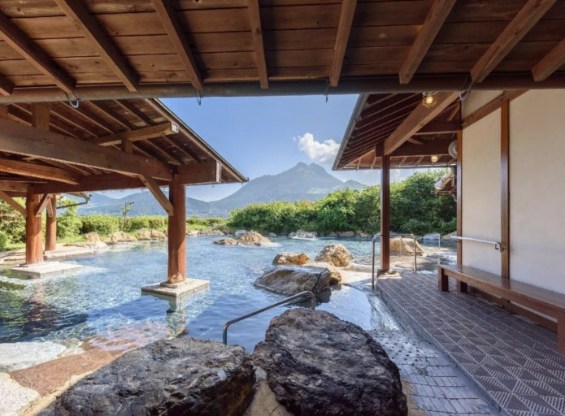

돈암서원
돈암서원은 사계 김장생(1548~1631)의 강학 기반을 배경으로 건립된 서원이다. 황강 김계휘가 건립한 정회당과 김장생이 건립한 양성당에서 수학한 김장생의 제자들이 후에 스승을 추모하며 기리기 위하여 돈암서원을 건립하였다.
음성 이야기
한국어·일본어 음성 안내
QR 하나로 주민 스토리 · 다국어 음성 · 주변 상점 · 후기 · 바우처를 체험하는 곳입니다.
▦ QR 보기사진과 소개글, 한국어·일본어 음성으로 돈암서원과 탑정호를 만나보세요.
돈암서원은 사계 김장생(1548~1631)의 강학 기반을 배경으로 건립된 서원이다. 황강 김계휘가 건립한 정회당과 김장생이 건립한 양성당에서 수학한 김장생의 제자들이 후에 스승을 추모하며 기리기 위하여 돈암서원을 건립하였다.
한국어·일본어 음성 안내
탑정호는 고려시대의 역사와 전승이 남아 있는 ‘탑정리’ 일대에 1944년 농업용수 확보를 위해 조성된 저수지로, 이후 수변생태공원과 관광시설(출렁다리, 음악분수 등)이 조성되면서 농업용 저수지에서 논산을 대표하는 관광·휴양 공간으로 변화해 왔다.
한국어·일본어 음성 안내
※ 현재 상점명은 발표용 가상 예시이며 실제 시범 운영 시 협력 상점으로 교체합니다.
둘러본 상점을 선택하고 별점과 후기를 남겨주세요. 저장이 완료되면 데모 바우처가 열립니다.
발표용 모의 바우처이며 실제 결제에는 사용할 수 없습니다. 이 화면에서 저장한 후기만 발급 조건에 반영됩니다.
한국어·일본어 음성 안내

한국어·일본어 음성 안내